BookCased
A new reading tracking app alternative.
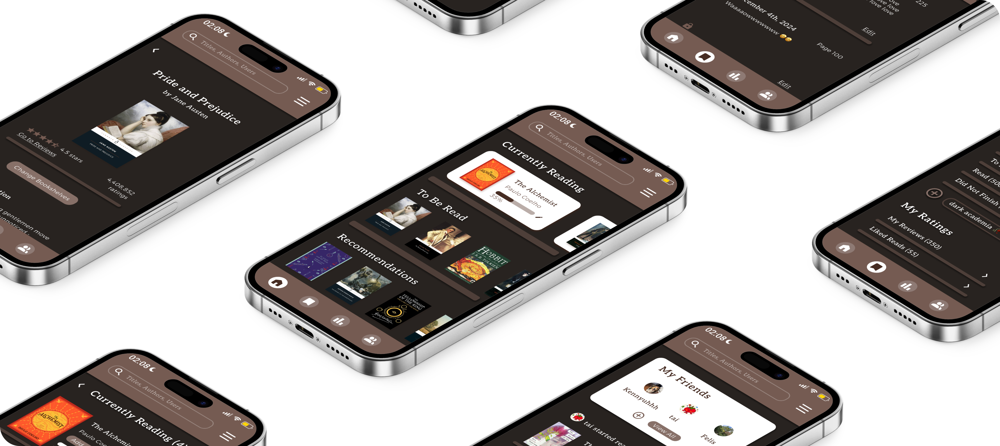
Motivation
As an avid reader, I used many reading tracking apps — Goodreads, StoryGraph, LibraryThing — and I never found one that I felt satisfied with. This inspired me to pursue a fun challenge: designing a reading tracking app of my own.
Research
After looking into the user demographics of popular reading tracking apps, specifically Goodreads and StoryGraph, I decided to target BookCased towards the common majority of reading tracking app users: women between the ages of 18 to 24 years.
I interviewed three female undergraduate students, as well as received 13 anonymous survey responses. My interviewees and survey respondents shared their experiences with the reading tracking app they currently use the most. I learned that, within my sample size, users:
* enjoy having other book-related functions (e.g., setting reading goals)
* think their reading tracking apps are cluttered with unnecessary features
* think the layout of their apps are very unorganized and confusing
You can view my research in detail here.
After compiling my research together, I repeatedly asked myself these questions to guide me as I began to think about designing BookCased:
* How might we make its features easily accessible to users?
* How might we simplify the app for users?
* How might we emphasize the app’s main features to users?
* How might we keep users engaged with the app?
* How might we make the app intuitive for new users?
Wireframes
When thinking about what BookCased should look like, I first turned to my survey responses. Since my survey respondents answered that they mainly used either Goodreads or StoryGraph, I decided to take inspiration from those two apps. I began my design process by drawing a sketch of what would be the first iteration of the BookCased’ home page.
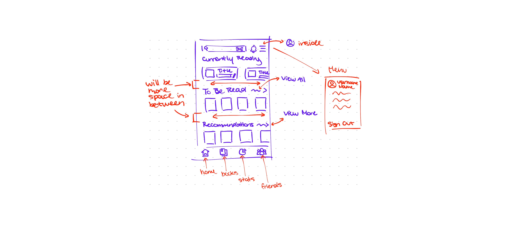
One important decision I struggled with while sketching the home page was settling on what I wanted the app’s other main pages to be. I decided that the app would have:
* a page to view saved books
* a page to view reading statistics
* a page to view friends’ reading activity
After I had a rough idea of what I wanted the home page to look like and what I wanted the other main pages to be, I began designing my low-fidelity wireframes. While designing the wireframes, I focused on simplifying each page, trying to minimize the amount of scrolling users would have to do while using the app.
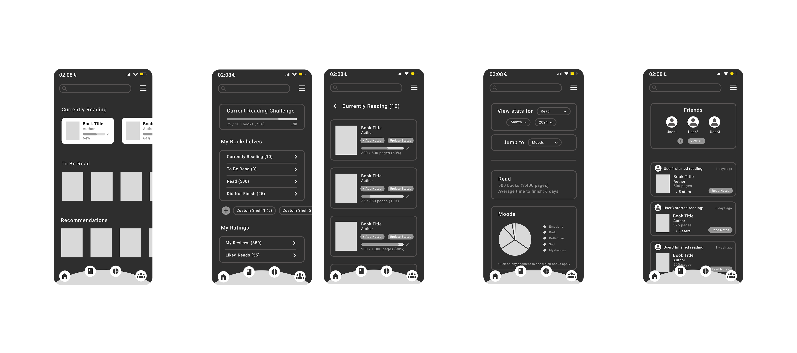
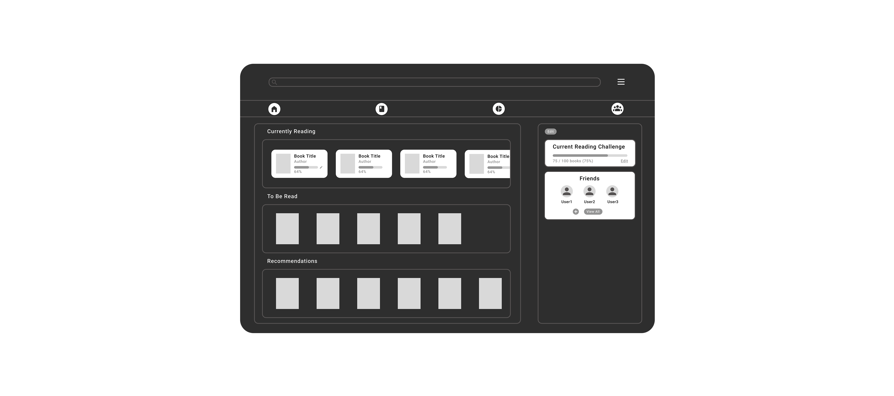
You can view all my wireframes here.
UI Designs — First Version
Immediately, I knew that I wanted the app to visually resemble a bookshelf, so I added thick dividers in every page to represent shelves. The color palette I chose is a variety of browns to resemble wood, which most traditional bookshelves are made out of, and also since the color brown is known to be a calming color. I wanted the app to be a soothing space for readers.
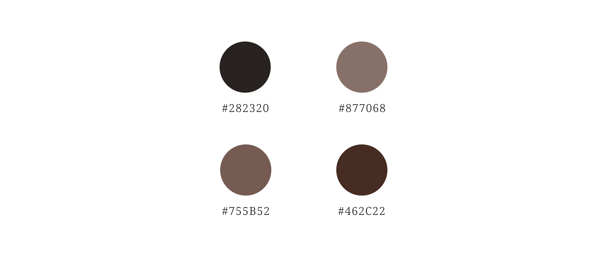
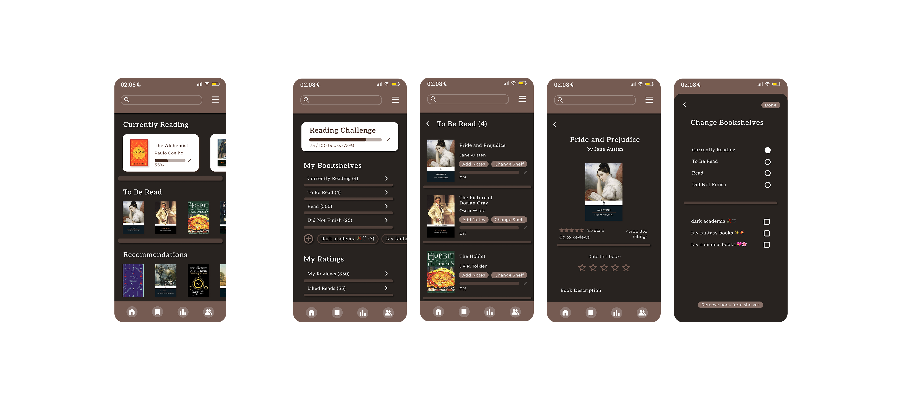
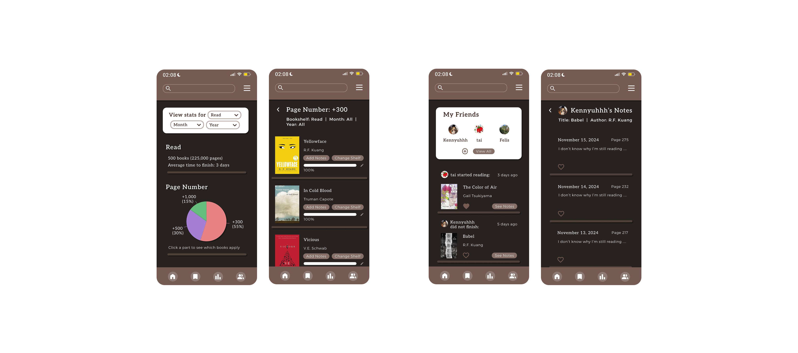
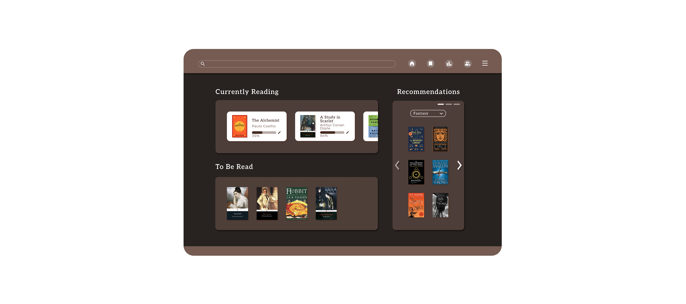
You can view all Version 1 designs here.
User Testing
With my new designs, I interviewed three female undergraduate students again—one returning from my first round of interviews and two new interviewees. I had them perform tasks that I expected many users would perform on a reading tracking app, such as:
* reading book reviews
* saving books (adding them to their bookshelves)
* reviewing books
* rating books
* adding friends
I had my interviewees explain their thought processes as they attempted to perform these tasks, which helped me gain valuable insight into their expectations as new users.
You can view my research in detail here.
As I saw my interviewees get confused as they made their ways to completing the tasks, I realized that I also need to work to make the app more intuitive and make functions more easily accessible to users. I also need to help users understand what the page icons represent because all my interviewees thought the icons would lead them to pages different from what they assumed.
UI Designs — Final Version
In my final design, I increased the sociability aspect of BookCased, which was requested by many. I also worked to make the app more intuitive for users, and when that is not enough, I added a little bit of guidance to help the users along their journey with the app.
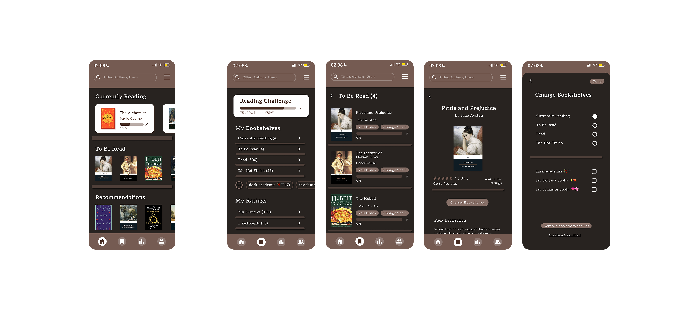
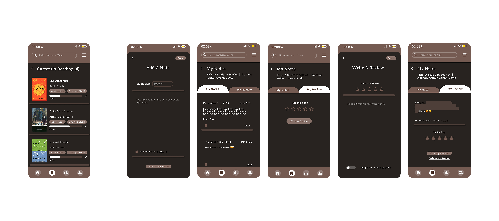
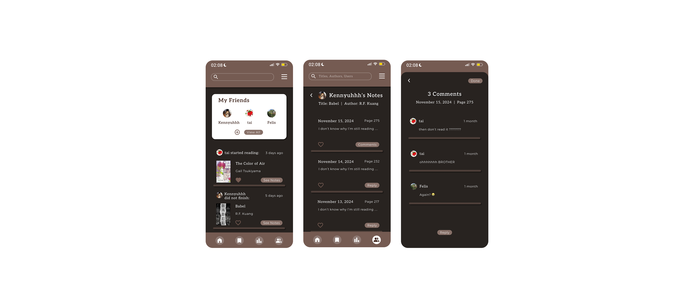
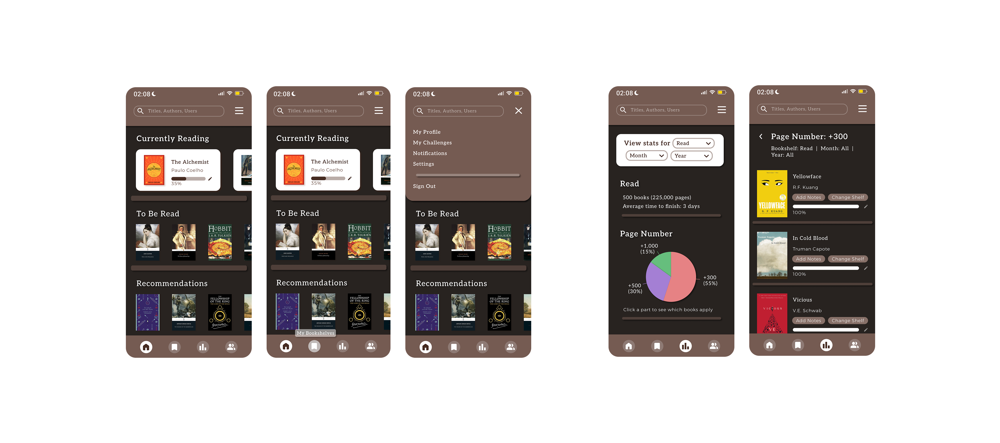
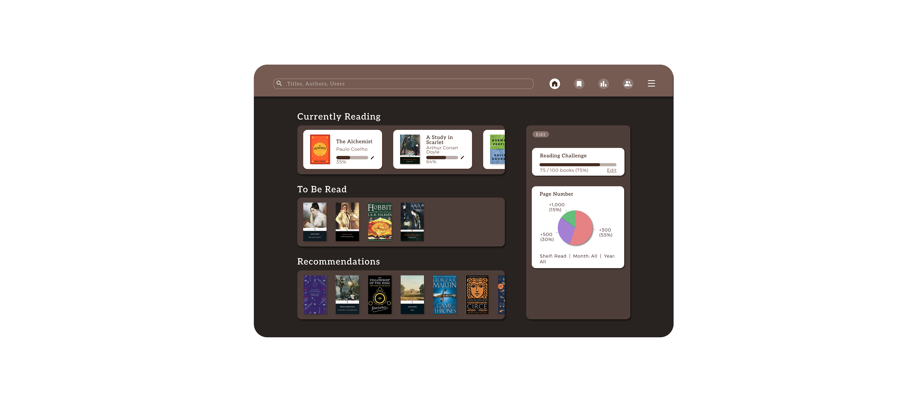
You can view my research in detail here.